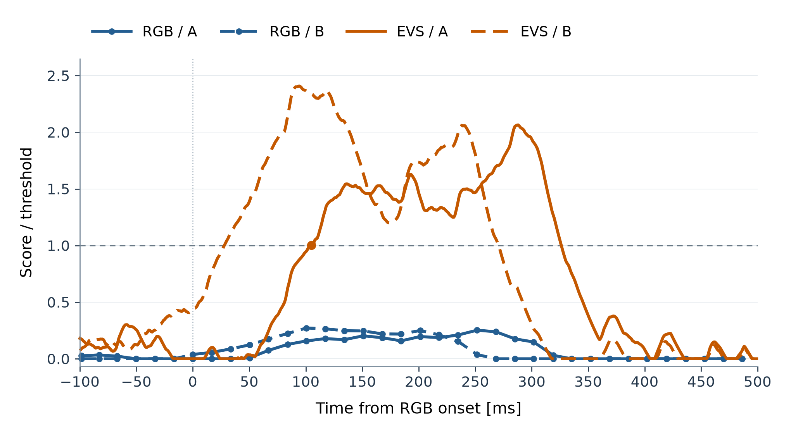
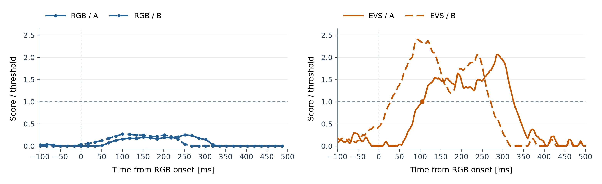

同じ隣接2区画、RGB初出現の−100〜+500 ms。横軸はRGBで見え始めた時刻を0 msとした時間、50 ms刻み。縦軸は各センサの積算スコアをそのセンサの固定しきい値で割った値。点線は1。
青：RGB、橙：EVS。実線：区画A、破線：区画B。同じA/Bは同じ画像位置を示す。
RGBの小さな点は元のフレームごとの値。橙の丸は保存済みEVS候補時刻（表示区間内の場合のみ）。RGBには検出を示す丸を追加していない。
区画ID [177, 178]。表示サンプル数 RGB=36 / EVS=600。全評価区間の候補数 RGB=0 / EVS=1。
RGBの評価対象データは初出現から -5.918〜3.169 s。全評価区間・全隣接ペアの最大検知スコア比は 0.966。上図の固定2区画の値とは集計範囲が異なる。
EVSで選ばれた区画の履歴をRGBでも表示した方法説明用の図。RGB自身が選んだ候補区画や、検出性能の独立評価を表すものではない。
重ね描き SVG / RGB SVG / EVS SVG / 数値と出典
